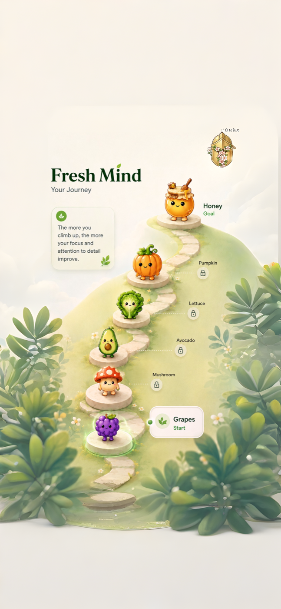
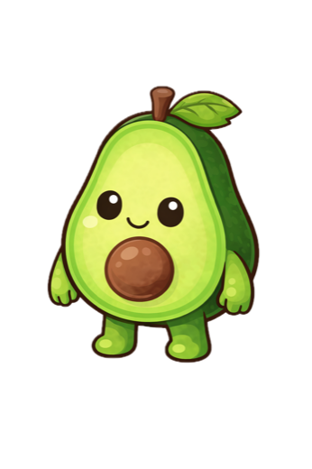

Connect Screen Time
Fresh Mind asks for Apple Screen Time access so it can calculate usage insights and produce state. It does not read messages, browsing content, or private in-app content.
A gentler mirror for your phone habits
Fresh Mind turns your day into a living produce journey. Your character changes as your screen time changes, helping you notice patterns without blame, pressure, or aggressive blocking.
Your grapes are listening.
2h 14m today. A little lower than usual.
Fresh Mind makes screen time visible through a soft, memorable metaphor. When your usage shifts, your produce shifts with it. The point is not punishment. It is awareness you can actually feel.
How it works
Simple enough to understand in a glance, honest enough to help you notice what changed.
Fresh Mind asks for Apple Screen Time access so it can calculate usage insights and produce state. It does not read messages, browsing content, or private in-app content.
Your character responds to your day with warm visual feedback. More mindful days feel fresh. Heavier days are shown clearly, without scolding.
Progress, weekly summaries, and gentle reminders make it easier to understand your day and build a calmer relationship with your phone.
Progress and clarity
Fresh Mind is built around clarity instead of guilt. Daily progress, comparisons, and detail views help you see whether today is lighter, heavier, or simply different from your usual rhythm.
Garden journey
Your progress unlocks new produce over time, creating a quiet record of consistency, recovery, and growth.


AvocadoGentle notifications
Daily reminders, decay alerts, and weekly summaries are designed to feel human and quiet. They help you return to awareness without making your phone feel like an enemy.
Privacy-first
Fresh Mind uses Screen Time permissions to calculate usage insights and produce state. It is not designed to inspect your messages, browsing content, photos, or private in-app activity.
Read the Privacy PolicyNo shame. No harsh lockouts. Just a clearer mirror, one day at a time.